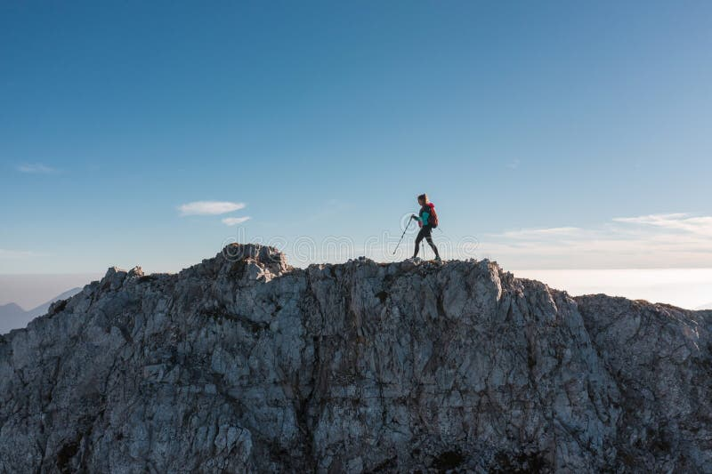
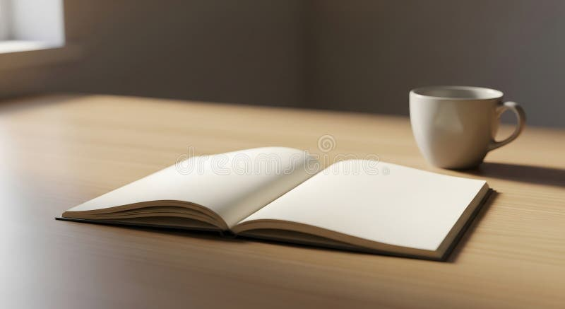
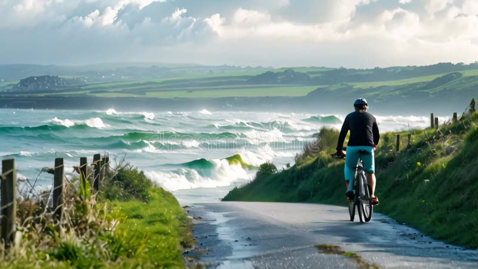

Photo Gallery



Why I Love Them
- Hiking keeps me active and lets me explore nature.
- Reading helps me relax and learn new things.
- Cycling is a fun way to travel and stay fit.
Learn more about outdoor activities at the National Park Service .